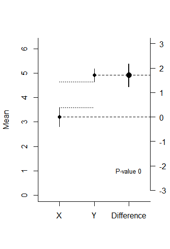

5 Effect Sizes and Confidence Intervals
5.1 Effect sizes
What is the most important outcome of an empirical study? You might be tempted to say it’s the p-value of the statistical test, given that it is practically always reported in articles, and determines whether we call something ‘significant’ or not. However, as Cohen Cohen (1990Cohen, J. (1990). Things I have learned (so far). American Psychologist, 45(12), 1304–1312. https://doi.org/10.1037/0003-066X.45.12.1304) writes in his ‘Things I’ve learned (so far)’:
I have learned and taught that the primary product of a research inquiry is one or more measures of effect size, not p-values.
Although what you want to learn from your data is different in every study, and there rarely is any single thing you always want to know, effect sizes are a very important part of the information we gain from data collection. A measure of effect size is a quantitative description of the strength of a phenomenon. It is expressed as a number on a scale, and which scale is used depends on the effect size measure that is used. For unstandardized effect sizes, we can use a scale that people are very familiar with. For example, children grow on average 6 centimeters a year between the age of 2 and puberty. We can interpret 6 centimeters a year as an effect size. It is obvious an effect size has many benefits over a p-value. A p-value gives an indication that it is very unlikely children stay the same size as they become older – effect sizes tell us what size clothes we can expect children to wear when they are a certain age, and how long it will take before their new clothes are too small.
Researchers often report standardized effect sizes because many psychological variables are not measured on a scale people are familiar with, or are often measured on different scales. If you ask people how happy they are, an answer of ‘5’ will mean something very different if you asked then on a scale from 1 to 5 than if you asked them on a scale from 1 to 9. Standardized effect sizes allow researchers to present the magnitude of the reported effects in a standardized metric. Therefore, standardized effect sizes can be understood and compared regardless of the scale that was used to measure the dependent variable. Such standardized effect sizes allow researchers to communicate the practical significance of their results (the practical consequences of the findings for daily life), instead of only reporting the statistical significance (how surprising is the data, given the assumption that there is no effect in the population).
Standardized effect sizes also allow researchers to draw meta-analytic conclusions by comparing standardized effect sizes across studies. In a meta-analysis, researchers look at the results of a large number of studies and calculate the average effect size across studies to draw more reliable conclusions. Finally, standardized effect sizes from previous studies can be used when planning a new study. An a-priori power analysis can provide an indication of the average sample size a study needs to observe a statistically significant result with a desired probability.
It is important to make a distinction between ‘statistically significant’ and ‘substantially interesting’. For example, we might be able to reliably measure that on average, men who are 19 years old will grow another 20 millimeters before they are 21. This difference might very well be statistically significant, but if you go shopping for clothes when you are a 19-year old man, it is not something you need to think about. The most important way to evaluate whether an effect is substantially interesting is to look at the effect size.
5.1.1 The Facebook experiment
In the summer of 2014 there were some concerns about an experiment Facebook had performed on its users to examine ‘emotional mood contagion’, or the idea that people’s moods can be influenced by the mood of people around them. You can read the article here. For starters, there was substantial concern about the ethical aspects of the study, primarily because the researchers who performed the study had not asked informed consent from the participants in the study (you and me), nor did they ask for permission from the institutional review board (or ethics committee) of their university.
One of the other criticisms on the study was that it could be dangerous to influence people’s mood. As Nancy J. Smyth, dean of the University of Buffalo’s School of Social Work wrote on her Social Work blog: “There might even have been increased self-harm episodes, out of control anger, or dare I say it, suicide attempts or suicides that resulted from the experimental manipulation. Did this experiment create harm? The problem is, we will never know, because the protections for human subjects were never put into place”.
If this Facebook experiment had such a strong effect on people’s mood that it made some people commit suicide who would otherwise not have committed suicide, this would obviously be problematic. So let us look at the effects the manipulation Facebook used had on people a bit more closely.
From the article, let’s see what the researchers manipulated:
Two parallel experiments were conducted for positive and negative emotion: One in which exposure to friends’ positive emotional content in their News Feed was reduced, and one in which exposure to negative emotional content in their News Feed was reduced. In these conditions, when a person loaded their News Feed, posts that contained emotional content of the relevant emotional valence, each emotional post had between a 10% and 90% chance (based on their User ID) of being omitted from their News Feed for that specific viewing.
Then what they measured:
For each experiment, two dependent variables were examined pertaining to emotionality expressed in people’s own status updates: the percentage of all words produced by a given person that was either positive or negative during the experimental period. In total, over 3 million posts were analyzed, containing over 122 million words, 4 million of which were positive (3.6%) and 1.8 million negative (1.6%).
And then what they found:
When positive posts were reduced in the News Feed, the percentage of positive words in people’s status updates decreased by B = −0.1% compared with control [t(310,044) = −5.63, P < 0.001, Cohen’s d = 0.02], whereas the percentage of words that were negative increased by B = 0.04% (t = 2.71, P = 0.007, d = 0.001). Conversely, when negative posts were reduced, the percent of words that were negative decreased by B = −0.07% [t(310,541) = −5.51, P < 0.001, d = 0.02] and the percentage of words that were positive, conversely, increased by B = 0.06% (t = 2.19, P < 0.003, d = 0.008).
Here, we will focus on the negative effects of the Facebook study (so specifically, the increase in negative words people used) to get an idea of whether there is a risk of an increase in suicide rates. Even though apparently there was a negative effect, it is not easy to get an understanding about the size of the effect from the numbers as mentioned in the text. Moreover, the number of posts that the researchers analyzed was really large. With a large sample, it becomes important to check if the size of the effect is such that the finding is substantially interesting, because with large sample sizes even minute differences will turn out to be statistically significant (we will look at this in more detail below). For that, we need a better understanding of “effect sizes”.
Now that we realize why effect sizes are important, let us look more closely at the most commonly used effect sizes, and how these are calculated.
Effect sizes can be grouped into two families (Rosenthal et al., 2000Rosenthal, R., Rosnow, R. L., & Rubin, D. B. (2000). Contrasts and effect sizes in behavioral research: A correlational approach. Cambridge University Press.): The d family (based on standardized mean differences) and the r family (based on measures of strength of association). Conceptually, the d family effect sizes are based on a comparison between the difference between the observations, divided by the standard deviation of these observations. This means that a Cohen’s d = 1 means the standardized difference between two groups equals one standard deviation. The r family effect sizes are based on the proportion of variance that is explained by group membership (e.g., a correlation of r = 0.5 indicates 25% (r2) of the variance is explained by the difference between groups). Don’t worry if you do not exactly get what this means at this point. The crucial issue is that we need to understand how to interpret the size of an effect, and that there are different ways to express the size of this effect.
5.2 Cohen’s d
The size of the effect in the Facebook study is given by the statistic Cohen’s d (which we will discuss in more detail below). Cohen’s d (the d is italicized) is used to describe the standardized mean difference of an effect. This value can be used to compare effects across studies, even when the dependent variables are measured in different ways, for example when one study uses 7-point scales to measure dependent variables, while the other study uses 9-point scales, or even when completely different measures are used, such as when one study uses self-report measures, and another study used physiological measurements.
Cohen’s d ranges from 0 to infinity. Before we get into the statistical details, let’s first visualize what a Cohen’s d of 0.001 (as was found in the Facebook study) means.
We will use a vizualization from http://rpsychologist.com/d3/cohend/, a website made by Kristoffer Magnusson, that allows you to visualize the differences between two measurements (such as the increase in negative words used by the Facebook user when the number of positive words on the timeline was reduced).
Figure 5.1: A vizualization of 2 groups (although the difference is hardly visible) representing d = 0.001.

Below the vizualization on the website, you can read some ways to interpret Cohen’s d in non-mathematical terms (the summary is provided about a number of people, but in the Facebook study, we are examining numbers of words). It says “Moreover, in order to have one more favorable outcome in the treatment group compared to the control group, we need to treat 3570.4 people on average.” This means in the Facebook study a person needs to type 3570 words before 1 word will be more negative instead of positive. I don’t know how often you type this amount of words on Facebook, but I think we can agree this effect is not noticeable on an individual level.
This illustrates the difference between a statistical difference and practical significance (or substantial interest). The effect is so small that it is unlikely to be noticeable for a single individual. Hence, in this case, and without further evidence, we would not worry too much about the extra suicides the research could have caused. Nevertheless, even such small effects can matter in other kinds of research. If an intervention makes people spend more money with a d = 0.001, and you have millions of transactions a year, a very small effect might very well make you a lot of money.
A large meta-analytic effort by Richard, Bond, and Stookes-Zoota (2003) estimated the median effect size in psychological studies to have a Cohen’s d = 0.43. Let’s use the vizualization to get a feeling for this effect size.
Figure 5.2: A vizualization of 2 groups representing d = 0.43.

Assume we know that people are more likely to comply with a large request after an initial smaller request, than when you ask the large request directly (this is known as the foot-in-the-door effect), and that in a specific context this effect size is 0.43. Given this effect size, how likely is it that a random person drawn from the ‘small initial request condition’ will be more likely to agree with your larger request, compared to a person in the ‘no initial small request’ condition? We see in Figure 5.2 that this probability of superiority is 61.9%.
Figure 5.3: A vizualization of 2 groups representing d = 2.

Based on this data, the difference between the height of 21-year old men and women in The Netherlands is approximately 13 centimeters (in an unstandardized effect size), or a standardized effect size of d = 2. If I pick a random man and a random woman walking down the street in my hometown of Rotterdam, how likely is it that the man will be taller than the woman? We see this is quite (92.1%) likely. But even with a huge effect size, which is much larger than most effects researchers study, there is still considerable overlap in the two distributions. If we conclude the length of people in one group is larger than the length of people in another group, this does not mean everyone in one group is larger than everyone in the other group!
To understand Cohen’s d, let’s first look at the formula for the t-statistic:
\[ t = \frac{{\overline{M}}_{1}{- \overline{M}}_{2}}{\text{SD}_{\text{pooled}} \times \sqrt{\frac{1}{n_{1}} + \frac{1}{n_{2}}}} \]
Here \[{\overline{M}}_{1}{- \overline{M}}_{2}\] is the difference between the means, and \[\text{SD}_{\text{pooled}}\] is the pooled standard deviation (see Lakens, 2013), and n1 and n2 are the sample sizes of the two groups you are comparing. The t-value (because it follows a known distribution) is used to determine whether the difference between two groups in a t-test is statistically significant. The formula for Cohen’s d is very similar:
Cohen’s d = \[\frac{{\overline{M}}_{1}{-\overline{M}}_{2}}{\text{SD}_{\text{pooled}}}\]
You can calculate Cohen’s d by hand from the independent samples t-value (which can often be convenient when the result section of the paper you are reading does not report effect sizes) through:
\[d = t ⨯ \sqrt{\frac{1}{n_{1}} + \frac{1}{n_{2}}}\]
As you can see, the sample size is part of the formula for a t-value, but it is not part of the formula for Cohen’s d. Let’s assume the difference between two means we observe is 1, and the pooled standard deviation is also 1. What, on average, happens to the t-value and Cohen’s d, as we would simulate studies, as a function of the sample size in these simulations? Given the mean difference and standard deviation, as the sample size becomes bigger, the t-value become larger, and Cohen’s d gets closer to the true value. That is, whereas the t-value (and the corresponding p-value) increase as a function of the sample size, Cohen’s d only becomes more accurate. This makes p-values a function of the sample size, when there is a true effect, and this means p-values can not be used to make a statement about whether an effect is practically significant. Reporting and interpreting the effect size will inform you about the practical significance of an effect, and therefore it is almost always beneficial to report effect sizes alongside any statistical test.
5.2.1 Correcting for Bias
Population effect sizes are almost always estimated on the basis of samples, and as a measure of the population effect size estimate based on sample averages, Cohen’s d overestimates the true population effect (when Cohen’s d refers to the population, the Greek letter δ is often used). Therefore, corrections for bias are used (even though these corrections do not always lead to a completely unbiased effect size estimate). In the d family of effect sizes, the correction for bias in the population effect size estimate of Cohen’s δ is known as Hedges’ g (although different people use different names – d_unbiased is also used). This correction for bias is only really noticeable in small sample sizes, but since we often use software to calculate effect sizes anyway, it makes sense to always report Hedge’s g instead of Cohen’s d.
A commonly used interpretation of Cohen’s d is to refer to effect sizes as small (d = 0.2), medium (d = 0.5), and large (d = 0.8) based on benchmarks suggested by Cohen (1988) – note, in the video I talk about d = 0.3 being a small effect size, but 0.2 is the benchmark for a small effect as specified by Cohen). However, these values are arbitrary and should not be interpreted too rigidly. Furthermore, small effect sizes can have large consequences, such as an intervention that leads to a reliable reduction in suicide rates with an effect size of d = 0.1. On the other hand, you have to start somewhere in getting a feeling for effect sizes, and these benchmarks are a good starting point.
An interesting, though not often used, interpretation of differences between groups can be provided by the common language effect size (McGraw & Wong, 1992McGraw, K. O., & Wong, S. P. (1992). A common language effect size statistic. Psychological Bulletin, 111(2), 361–365. https://doi.org/10.1037/0033-2909.111.2.361), also known as the probability of superiority. It expresses the probability that a randomly sampled person from one group will have a higher observed measurement than a randomly sampled person from the other group (for between designs) or the other measurement (for within-designs) the probability that an individual has a higher value on one measurement than the other. We used it earlier and it is provided by the website that visualizes Cohen’s d.
5.3 r (correlations)
The second effect size that is widely used is r. You might remember that r is used to refer to a correlation. The correlation of two continuous variables can range from 0 (completely unrelated) to 1 (perfect positive relationship) or -1 (perfect negative relationship). Obviously, given the flexibility of human behavior (free will has a lot to do with it) correlations between psychological variables are rarely 1. The median effect size r in psychology is (for what such an estimate is worth) .21 (Richard et al., 2003Richard, F. D., Bond, C. F., & Stokes-Zoota, J. J. (2003). One Hundred Years of Social Psychology Quantitatively Described. Review of General Psychology, 7(4), 331–363. https://doi.org/10.1037/1089-2680.7.4.331). As mentioned earlier, the r family effect sizes describe the proportion of variance that is explained by the independent variable, or \(r^2\).
Earlier, I mentioned the average effect size in psychology is d = 0.43. You might, therefore, think a d = 0.43 and an r = .21 should be related somehow, and they are:
\(r = \frac{d_s}{\sqrt{{d_s^{2}}^{+}\frac{N^{2} - 2N}{n_{1} \times n_{2}}}}\)
The subscript s underneath Cohen’s d is used to specify this Cohen’s d is calculated based on the sample, not based on the population. This is almost always the case (except in simulation studies, where you can set the effect size in the population), and N is the total sample size of both groups, whereas n1 and n2 are the sample sizes of the two groups you are comparing. You can go to http://rpsychologist.com/d3/correlation/ to look at a good visualization of the proportion of variance that is explained by group membership, and the relationship between r and r2.
Effect sizes can be implausibly large. Let’s take a look at a study that actually examines the number of suicides – as a function of the amount of country music played on the radio. You can find the paper here (for a free PDF version, click here). It won an Ig Nobel prize for studies that first make you laugh, and then think. I guess in this case the study should make you think about the importance of interpreting effect sizes.
The authors predicted the following:
We contend that the themes found in country music-foster a suicidal mood among people already at risk of suicide and that it is thereby associated with a high suicide rate.
Then they collected data:
Our sample is comprised of 49 large metropolitan areas for which data on music were available. Exposure to country music is measured as the proportion of radio airtime devoted to country music. Suicide data were extracted from the annual Mortality Tapes, obtained from the Inter-University Consortium for Political and Social Research (ICPSR) at the University of Michigan. The dependent variable is the number of suicides per 100,000 population.
And they concluded:
A significant zero-order correlation was found between white suicide rates and country music (r = .54, p < .05). The greater the airtime given to country music, the greater the white suicide rate.
Cohen (1988) has provided benchmarks to define small (r = 0.1), medium (r = 0.3), and large (r = 0.5) effects. This means the effect of listening to country music on suicide rates is large. Remember that it is preferable to relate the effect size to other effects in the literature instead of to these benchmarks. What do you think of the likelihood that listening to country music is strongly associated with higher suicide rates? Is country music really that bad? Probably not - which demonstrates the importance of not just reporting, but also interpreting, the effect size.
If you were doubtful about the possibility that this effect was real, you might not be surprised by the fact that other researchers were not able to reproduce the analysis of the original authors. It is likely that the results are spurious, or a Type 1 error.
Eta squared η² (part of the r family of effect sizes, and an extension of r that can be used for more than two sets of observations) measures the proportion of the variation in Y that is associated with membership of the different groups defined by X, or the sum of squares of the effect divided by the total sum of squares:
\(\eta^{2}\) = \(\frac{\text{SS}_{\text{effect}}}{\text{SS}_{\text{total}}}\)
An η² of .13 means that 13% of the total variance can be accounted for by group membership. Although η² is an efficient way to compare the sizes of effects within a study (given that every effect is interpreted in relation to the total variance, all η² from a single study sum to 100%), eta squared cannot easily be compared between studies, because the total variability in a study (SStotal) depends on the design of a study, and increases when additional variables are manipulated (e.g., when independent variables are added). Keppel (1991) has recommended partial eta squared (\(\eta_{p}^{2}\)) to improve the comparability of effect sizes between studies, which expresses the sum of squares of the effect in relation to the sum of squares of the effect and the sum of squares of the error associated with the effect. Partial eta squared is calculated as:
\(\eta_{p}^{2}\) = \(\frac{\text{SS}_{\text{effect}}}{\text{SS}_{\text{effect}} + \text{SS}_{\text{error}}}\)
For designs with fixed factors (manipulated factors, or factors that exhaust all levels of the independent variable, such as alive vs. dead), but not for designs with measured factors or covariates, partial eta squared can be computed from the F-value and its degrees of freedom (Cohen, 1988Cohen, J. (1988). Statistical power analysis for the behavioral sciences (2nd ed). L. Erlbaum Associates.):
\(\eta_{p}^{2}\) =\(\frac{F \times \text{df}_{\text{effect}}}{{F \times \text{df}}_{\text{effect}} + \text{df}_{\text{error}}}\)
For example, for an F(1, 38) = 7.21, \(\eta_{p}^{2}\) = 7.21 ⨯ 1/(7.21 ⨯ 1 + 38) = 0.16.
Eta squared can be transformed into Cohen’s d:
d = 2\(\times f\) where \(f^{2} = \eta^{2}/(1 - \eta^{2})\)
As with Cohen’s d, η² is a biased estimate of the true effect size in the population. Two less biased effect size estimates have been proposed, epsilon squared \(\varepsilon^{2}\) and omega squared \(\omega^{2}\). Because these effect sizes are less biased, it is always better to use them. Partial epsilon squared and partial omega squared can be calculated based on the F-value and degrees of freedom.
\[ \omega_{p}^{2} = \frac{F - 1}{F + \ \frac{\text{df}_{\text{error}} + 1}{\text{df}_{\text{effect}}}} \]
\[ \varepsilon_{p}^{2} = \frac{F - 1}{F + \ \frac{\text{df}_{\text{error}}}{\text{df}_{\text{effect}}}} \]
For further reading about effect size estimates, see this practical primer I have written (Lakens, 2013Lakens, D. (2013). Calculating and reporting effect sizes to facilitate cumulative science: A practical primer for t-tests and ANOVAs. Frontiers in Psychology, 4. https://doi.org/10.3389/fpsyg.2013.00863).
5.4 Confidence Intervals
As Kelley and Rausch Kelley & Rausch (2006Kelley, K., & Rausch, J. R. (2006). Sample size planning for the standardized mean difference: Accuracy in parameter estimation via narrow confidence intervals. Psychological Methods, 11(4), 363.) explain, it is misleading to report point estimates without illustrating the uncertainty surrounding that estimate. Pretending as if the outcome of your statistical test is the final and exact answer is misleading, and you should always communicate the remaining uncertainty when you report statistical analyses. Here, we will examine this question in detail by learning how to think about, calculate, and report confidence intervals around estimates from samples.
5.4.1 Population vs. Samples
In statistics, we differentiate between the population and the sample. The population is everyone you are interested in, such as all people in the world, elderly who are depressed, or people who buy innovative products. Your sample is everyone you were able to measure from the population you are interested in. We similarly distinguish between a parameter and a statistic. A parameter is a characteristic of the population, while a statistic is a characteristic of a sample. Sometimes, you have data about your entire population. For example, we have measured the height of all the people who have ever walked on the moon. We can calculate the average height of these twelve individuals, and so we know the true parameter. We do not need inferential statistics. However, we do not know the average height of all people who have ever walked on the earth. Therefore, we need to estimate this parameter, using a statistic based on a sample.
In addition to the goal of observing a significant difference in a study (for example a p < .05), researchers can have the goal of estimating a parameter accurately (regardless of whether this estimate differs from the null-hypothesis or not). Confidence intervals can be calculated around any statistic in your data.
Confidence intervals are a statement about the percentage of confidence intervals that contain the true parameter value. This behavior of confidence intervals is nicely visualized on this website by Kristoffer Magnusson: http://rpsychologist.com/d3/CI/. We see blue dots that represent means from a sample, fall around a red vertical line, which represents the true value of the parameter in the population. We see the blue dots do not always fall exactly on the red line. This illustrates the important fact that there is always variation in samples.
The horizontal lines around the blue dots are the confidence intervals. By default, the visualization shows 95% confidence intervals. Most of the lines are black, but some are red. In fact, in the long run, 95% of the horizontal bars will be black, and 5% will be red.
We can now see what is meant by the sentence “Confidence intervals are a statement about the percentage of confidence intervals that contain the true parameter value“. For 95% of the samples, the red line (the population parameter) is contained within the 95% confidence interval around the sample mean.
As we will see when we turn to the formulas for confidence intervals, sample means and their confidence intervals depend on the sample size. The larger the sample size, the smaller the confidence intervals.
5.4.2 The relation between confidence intervals and p-values
There is a direct relationship between the CI of an effect size and the statistical difference from 0 of the effect. For example, if an effect is statistically different (p < 0.05) from 0 in a two-sided t-test with an alpha of .05, the 95% CI for the mean difference between two groups will never include zero. Confidence intervals are usually said to be more informative than p-values, because they do not only provide information about the statistical difference from 0 of an effect but they also communicate the precision of the effect size estimate. If 0 is not contained in the confidence interval around the mean difference, the effect is statistically different from zero – it might be a false positive, but the p-value will be smaller than 0.05.
Confidence intervals are often used in forest plots that communicate the results from a meta-analysis. In the plot below, we see 4 rows. Each row shows the effect size estimate from one study (in Hedges’ g). For example, study 1 yielded an effect size estimate of 0.44, with a confidence interval around the effect size from 0.08 to 0.8. The horizontal black line, similarly to the visualization we played around with before, is the width of the confidence interval. When it does not touch the effect size 0 (indicated by a black vertical line) the effect is statistically significant.

We can see, based on the fact that the confidence intervals do not overlap with 0, that studies 1, 2, and 4 were statistically significant.The light blue diamond is the meta-analytic effect size. Instead of using a black horizontal line, the upper limit and lower limit of the confidence interval are indicated by the left and right points of the diamond. The center of the diamond is the meta-analytic effect size estimate. A meta-analysis calculates the effect size by combining and weighing all studies. The confidence interval for a meta-analytic effect size estimate is always narrower than that for a single study, because of the combined sample size of all studies included in the meta-analysis.
5.4.3 The Standard Error and 95% Confidence Intervals
To calculate a confidence interval, we need the standard error. The standard error (SE) estimates the variability between sample means that would be obtained after taking several measurements from the same population. It is easy to confuse it with the standard deviation, which is the degree to which individuals within the sample differ from the sample mean. Formally, statisticians distinguish between σ and \(\widehat{\sigma}\), where the hat means the value is estimated from a sample, and the lack of a hat means it is the population value – but I’ll leave out the hat, even when I’ll mostly talk about estimated values based on a sample in the formulas below. Mathematically (where σ is the standard deviation),
Standard Error (SE) = σ/√n
The standard error of the sample will tend to zero with increasing sample size, because the estimate of the population mean will become more and more accurate. The standard deviation of the sample will become more and more similar to the population standard deviation as the sample size increases, but it will not become smaller. Where the standard deviation is a statistic that is descriptive of your sample, the standard error describes bounds on a random sampling process.
The Standard Error is used to construct confidence intervals (CI) around sample estimates, such as the mean, or differences between means, or whatever statistics you might be interested in. To calculate a confidence interval around a mean (indicated by the Greek letter mu: μ), we use the t distribution with the corresponding degrees of freedom (df : in a one-sample t-test, the degrees of freedom are n-1):
μ±tdf, 1-(α/2) × SE
With a 95% confidence interval, the α = 0.05, and thus the critical t-value for the degrees of freedom for 1- α /2, or the 0.975th quantile is calculated. Remember that a t-distribution has slightly thicker tails than a Z-distribution. Where the 0.975th quantile for a Z-distribution is 1.96, the value for a t-distribution with for example df = 19 is 2.093. This value is multiplied by the standard error, and added (for the upper limit of the confidence interval) or subtracted (for the lower limit of the confidence interval) from the mean.
5.4.4 Overlapping Confidence Intervals
Confidence intervals are often used in plots. In the example below, you see three estimates (the dots), surrounded by three lines (the 95% confidence intervals). The left two dots (X and Y) represent the means of the independent groups X and Y on a scale from 0 to 7 (see the axis from 0-7 on the left side of the plot). The dotted lines between the two confidence intervals visualize the overlap between the confidence intervals around the means. The two confidence intervals around means in columns X and Y are commonly shown in a figure in a scientific article. The third dot, slightly larger, is the difference between X and Y, and slightly thicker line visualizes the confidence interval of the difference. The difference score uses the axis on the right (from -3 to 3). In the plot below, the mean of group X is 3.3, the mean of group Y is 5.1, and the difference is 1.8.
The width of the confidence interval depends on the sample size, the confidence interval level, and the standard error, as you have seen before. In the plot on the left below, the sample size was 50 people in each group, while on the right, the sample size was 500 people in each group. The difference in the width of the confidence intervals is substantial. It is also clear that accurate estimates require large samples.


As mentioned earlier, when a 95% confidence interval does not contain 0, the effect is statistically different from 0. For a t-test, this is true for the confidence interval around an effect size, or around a mean difference, because the mean difference, or the standardized mean difference (the effect size) are directly related to the significance test. In the plots above, the mean difference and the 95% confidence interval around it are visible on the right of each plot. When this 95% confidence interval does not contain 0, the t-test is significant at an alpha of 0.05. But the two confidence intervals around the individual means can be more difficult to interpret in relation to whether the means differ enough to be statistically significant. Open CI_Overlap.R, and run the code. It will generate plots like the one above. Run the entire script as often as you want (notice the variability in the p-values due to the relatively low power in the test!), to answer the following question. The p-value in the plot will tell you if the difference is statistically significant, and what the p-value is.
Q6: How much do two 95% confidence intervals around individual means from independent groups overlap when the effect is only just statistically significant (p ≈ 0.05) at an alpha of 0.05?
When the 95% confidence interval around one mean does not contain the mean of the other group, the groups differ significantly from each other.
When the 95% confidence interval around one mean does not overlap with the 95% confidence interval of the mean of the other group, the groups differ significantly from each other.
When the overlap between two confidence intervals is approximately half of one side of the confidence interval, the groups differ significantly from each other.
There is no relationship between the overlap of the 95% confidence intervals around two independent means, and the p-value for the difference between these groups.
Note that this visual overlap rule can only be used when the comparison is made between independent groups, not between dependent groups! The 95% confidence interval around effect sizes is therefore typically more easily interpretable in relation to the significance of a test.
5.4.5 Prediction Intervals
Even though 95% of future confidence intervals will contain the true parameter, a 95% confidence interval will not contain 95% of future individual observations. Sometimes, researchers want to predict the interval within which a single value will fall. This is called the prediction interval. It is always much wider than a confidence interval. The reason is that individual observations can vary substantially, but means of future samples (which fall within a normal confidence interval 95% of the time) will vary much less.
Open the file CI_mean.R. Run the entire script. This scripts will simulate a single sample with a population mean of 100 and standard deviation of 15, and calculate the mean (M) and standard deviation (sd) of the sample. The black dotted line illustrates the true mean. 95% of the CI should contain the true mean (100).

The orange background illustrates the 95% confidence interval, calculated as we did manually before. The lighter yellow background illustrates the 95% prediction interval (PI). To calculate it, we need a slightly different formula for the standard error, namely:
Standard Error (SE) = σ*√(1+1/N)
When we rewrite the formula used for the confidence interval to σ*√(1/N), we see the difference between a confidence interval and the prediction interval is in the “1+” which always leads to wider intervals. Prediction intervals are wider, because they are constructed so that they will contain a future single value 95% of the time.
5.4.6 Capture Percentages
One thing people find difficult to understand is why a 95% confidence interval does not provide us with the interval where 95% of future means will fall. The % of means that falls within a single confidence interval is called the capture percentage. A 95% confidence interval is only a 95% capture percentage when the statistic (such as an effect size) you observe in a single sample happens to be exactly the same as the true parameter. This situation is illustrated in the picture below. The observed effect size (dot) falls exactly on the true effect size (vertical dotted line). In this case, and only in this case, 95% of future means will fall within this 95% confidence interval.

However, you can’t know whether your observed effect size happens to be exactly the same as the population effect size. When this is not the case (and it is almost never exactly the case) less than 95% of future effect sizes will fall within the CI from your current sample. The right side of the figure illustrates this. Let’s assume we observed an effect size much lower to the true effect size. We know that effect sizes from the sample are randomly distributed around the true effect size. Very often, we should find effect size estimates in our sample that fall outside the 95% confidence interval of the single sample we happen to have observed. So, the percentage of future means that fall within a single confidence interval depends upon which single confidence interval you happened to observe! In the long run, a 95% CI has an 83.4% capture probability (Cumming & Maillardet, 2006Cumming, G., & Maillardet, R. (2006). Confidence intervals and replication: Where will the next mean fall? Psychological Methods, 11(3), 217–227. https://doi.org/10.1037/1082-989X.11.3.217).
Let’s experience this through simulation. The simulation in the R script generates a large number of additional samples, after the initial one that was plotted. The simulation returns the number of CI that contains the mean (which should be 95% in the long run). The simulation also returns the % of means from future studies that fall within the 95% of the original study, or the capture percentage. It differs from (and is often lower, but sometimes higher, than) the confidence interval.
Q8: Run the simulations multiple times. Look at the output you will get in the R console. For example: “95.077 % of the 95% confidence intervals contained the true mean” and “The capture percentage for the plotted study, or the % of values within the observed confidence interval from 88.17208 to 103.1506 is: 82.377 %”. While running the simulations multiple times, look at the confidence interval around the sample mean, and relate this to the capture percentage. Which statement is true?
The farther the sample mean is from the true population mean, the lower the capture percentage.
The farther the sample mean is from the true population mean, the higher the capture percentage.
Q9: Simulations in R are randomly generated, but you can make a specific simulation reproducible by setting the seed of the random generation process. Copy-paste “set.seed(1000)” to the first line of the R script, and run the simulation. The sample mean should be 94. What is the capture percentage? (Don’t forget to remove the set.seed command if you want to generate more random simulations!).
95%
42.1%
84.3%
89.2%
Capture percentages are rarely directly used to make statistical inferences. The main reason we discuss them here is really to prevent the common misunderstanding that 95% of future means fall within a single confidence interval: Capture percentages clearly show that is not true. Prediction intervals are also rarely used in psychology, but are more common in data science.
In this assignment you have learned why it is important to provide a measure of the uncertainty of your estimates. We have discussed the correct interpretation of confidence intervals, the meaning of prediction intervals, and the difference between a confidence interval and a capture percentage.
5.5 Computing Confidence Intervals around Effect Sizes
5.5.1 MOTE
Currently the easiest and most complete solution to calculating effect sizes and confidence intervals is MOTE made by Dr. Erin Buchanan and her lab. The website comes with a full collections of tutorials, comparisons with other software packages, and demonstration videos giving incredible accessible overviews of how to compute effect sizes for a wide range of tests. For example, the video below gives an overview for an independent t-test
MOTE is also available as an R package (Buchanan et al., 2017Buchanan, E. M., Scofield, J., & Valentine, K. D. (2017). MOTE: Effect Size and Confidence Interval Calculator.). It contains many useful functions, such as ways to compute effect sizes from summary statistics, which provide output that can conveniently be embedded in an R Markdown document:
library(MOTE)
res <- d.ind.t(m1 = 1.7, m2 = 2.1, sd1 = 1.01, sd2 = 0.96, n1 = 77, n2 = 78, a = .05)
res$statistic## [1] "$t$(153) = -2.53, $p$ = .013"## [1] "$d_s$ = -0.41, 95\\% CI [-0.72, -0.09]"Although many solutions exists to compute Cohen’s d, MOTE sets itself apart by allowing researchers to compute effect sizes and confidence intervals for many additional effect sizes, such as (partial) omega squared for between subjects ANOVA (\(\omega^{2}\) and \(\omega^{2}_p\)), generalized omega squared for ANOVA (\(\omega^{2}_G\)), Epsilon squared for ANOVA (\(\varepsilon^{2}\)) and (partial) generalized eta squared for ANOVA (\(\eta^{2}_G\)), as well as Hedges’ g (bias corrected Cohen’s d). If you are want to compute effect sizes and their confidence intervals, this is the first resource you should try.
5.5.2 JASP
Free statistical software JAPS is a strong alternative to SPSS that (unlike SPSS) allows users to compute Cohen’s d and the confidence interval for both independent and dependent ttests.
Figure 5.4: JASP menu option allows you to select Cohen’s d and a CI around it.

Figure 5.5: JASP output returns Cohen’s d and the confidence interval around it.

JASP also allows you to compute omega squared \(\omega^{2}\), the less biased version of \(\varepsilon^{2}\) and
5.5.3 ESCI software
For people who prefer to use ESCI software by Geoff Cumming, ESCI also has an option to provide 95% CI around Cohen’s d, both for independent as for dependent t-tests. However, the option is slightly hidden - you need to scroll to the right, where you can check a box which is placed out of view.
Figure 5.6: ESCI software has a somewhat hidden option to compute 95% CI around Cohen’s d for within and between t-tests.

5.5.4 MBESS
MBESS is another R package that has a range of options to compute effect sizes and their confidence intervals (Kelley, 2007Kelley, K. (2007). Confidence Intervals for Standardized Effect Sizes: Theory, Application, and Implementation. Journal of Statistical Software, 20(8). https://doi.org/10.18637/JSS.V020.I08). The code below reproduces the example for MOTE above.
library(MBESS)
# Cohen's d
smd(Mean.1 = 1.7,
Mean.2 = 2.1,
s.1 = 1.01,
s.2 = 0.96,
n.1 = 77,
n.2 = 78)## [1] -0.406028# Hedges' g
smd(Mean.1 = 1.7,
Mean.2 = 2.1,
s.1 = 1.01,
s.2 = 0.96,
n.1 = 77,
n.2 = 78,
Unbiased = TRUE)## [1] -0.4040338To get the confidence interval for the proportion of variance (r², or η², or partial η²) in a fixed factor analysis of variance we need the ci.pvaf function. We need to specify the F-value, degrees of freedom, the sample size, and the confidence level.
## $Lower.Limit.Proportion.of.Variance.Accounted.for
## [1] 0.002600261
##
## $Probability.Less.Lower.Limit
## [1] 0.05
##
## $Upper.Limit.Proportion.of.Variance.Accounted.for
## [1] 0.07563493
##
## $Probability.Greater.Upper.Limit
## [1] 0.05
##
## $Actual.Coverage
## [1] 0.9For within designs, the MBESS package returns an error. For example:
## Error in ci.pvaf(F.value = 25.73, df.1 = 2, df.2 = 28, N = 18, conf.level = 0.9): N must be larger than df.1+df.2This error is correct in between-subjects designs (where the sample size is larger than the degrees of freedom) but this is not true in within-designs (where the sample size is smaller than the degrees of freedom for many of the tests). Thankfully, Ken Kelley (who made the MBESS package) helped me out in an e-mail by pointing out you could just use the R Code within the ci.pvaf function and adapt it. Just change the F-value, confidence level, and the df.1 and df.2.
Lims <- conf.limits.ncf(F.value = 7, conf.level = 0.90, df.1 <- 4, df.2 <- 50)
Lower.lim <- Lims$Lower.Limit/(Lims$Lower.Limit + df.1 + df.2 + 1)
Upper.lim <- Lims$Upper.Limit/(Lims$Upper.Limit + df.1 + df.2 + 1)
Lower.lim## [1] 0.1418798## [1] 0.46307165.5.5 Why should you report 90% CI for eta-squared?
You will see that in the code above I used a 90% CI for effect sizes calculated for an F-test. The reason for this is explained by Karl Wuensch, a leader in the field of applied statistics education, who has gone out of his way to explain this in a very clear document, including examples, which you can find here. If you don’t want to read it, you should know that while Cohen’s d can be both positive and negative, r² or η² are squared, and can therefore only be positive. This is related to the fact that F-tests (as commonly used in ANOVA) are one-sided. If you calculate a 95% CI, you can get situations where the confidence interval includes 0, but the test reveals a statistical difference with a p < .05 (for a more mathematical explanation, see Steiger (2004Steiger, J. H. (2004). Beyond the F Test: Effect Size Confidence Intervals and Tests of Close Fit in the Analysis of Variance and Contrast Analysis. Psychological Methods, 9(2), 164–182. https://doi.org/10.1037/1082-989X.9.2.164). This means that a 95% CI around Cohen’s d equals a 90% CI around η² for exactly the same test.
As a final detail, because eta-squared cannot be smaller than zero, the lower bound for the confidence interval can not be smaller than 0. This means that a confidence interval for an effect that is not statistically different from 0 has to start at 0. You report such a CI as 90% CI [.00; .XX] where the XX is the upper limit of the CI.
Page built: 2020-08-15